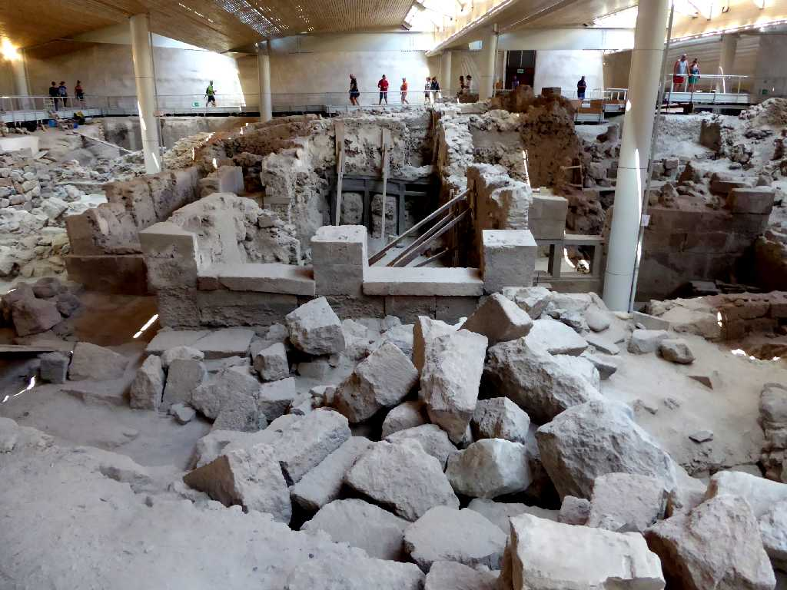
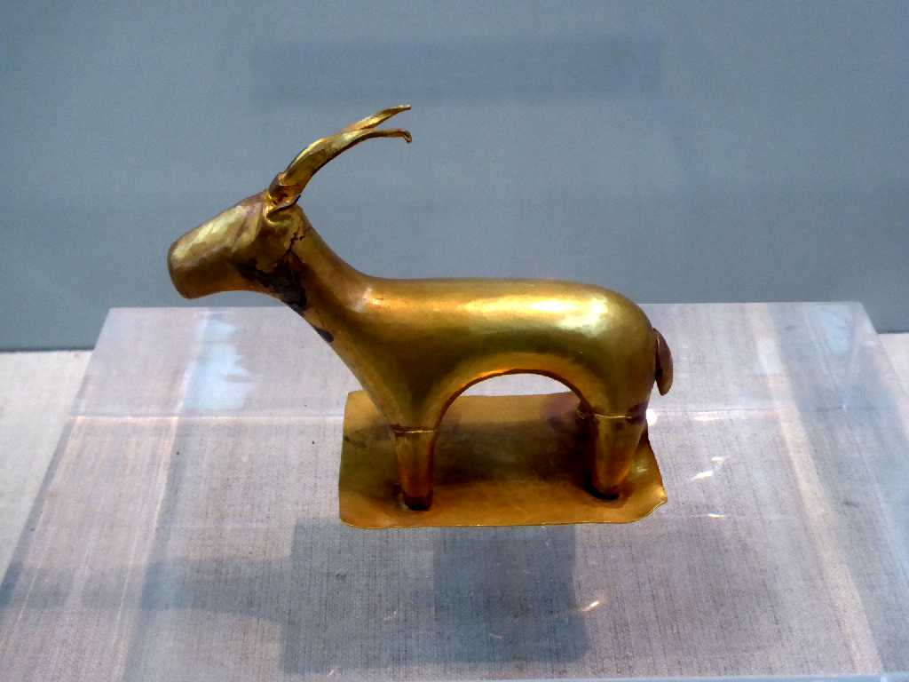
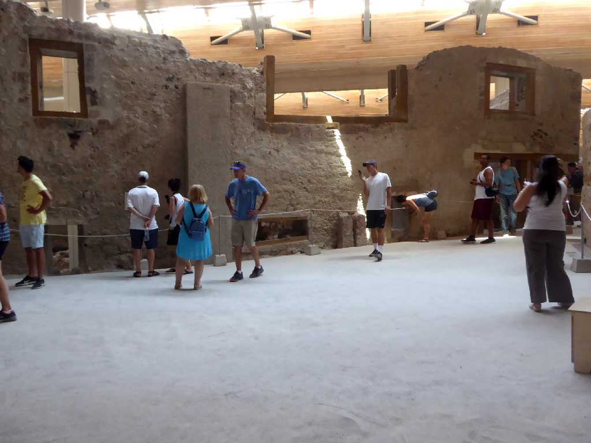
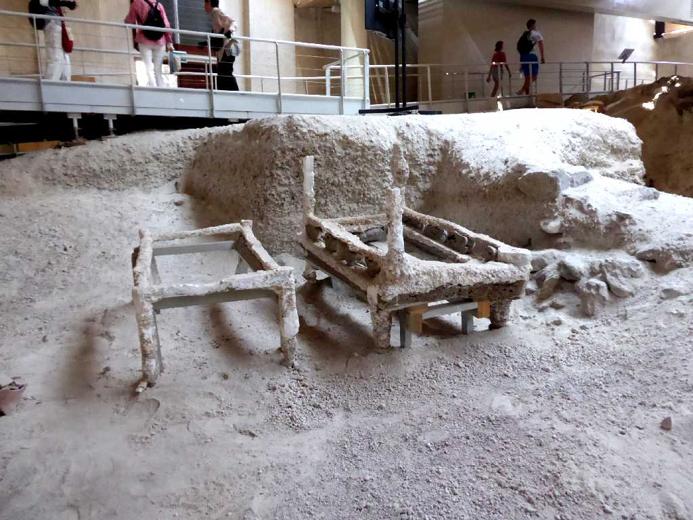
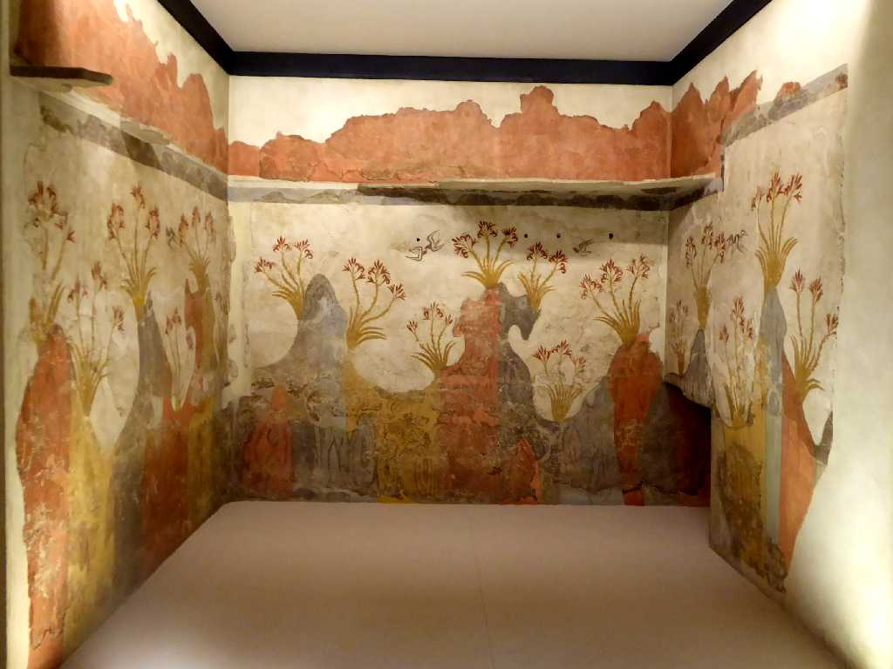

Akrotiri Santorini
サントリーニ島アクロティリ遺跡はクレタ文明時代の紀元前１５００年頃の都市遺跡群で黄金の山羊が発掘された儀式を行ったと思われる建物跡

Gold Ibex Museum of Prehistoric Thira

June 21 2018 Central Square Akrotiri
街の中心であったと考えられている三角形の中央広場

Bed Akrotiri
３５００年前のベッドが発掘された

Fresco Akrotiri National Archaeological Museum of Athens
サントリーニ火山噴火前の岩に美しいユリの花が描かれている